How to Use PRONE for the Evaluation of Normalization Methods on Spike-In Data
Arend Lis
Source:vignettes/Spike_In_Data.Rmd
Spike_In_Data.RmdSpike-in Data Sets
PRONE also offers some additional functionalities for the evaluation of normalization techniques on spike-in data sets with a known ground truth. These functionalities will be delineated subsequently. Additionally, all functionalities detailed in the context of real-world data sets remain applicable to the SummarizedExperiment object associated with spike-in data sets.
The example spike-in data set is from (Cox et al. 2014).
Load Data
Initially, the spike-in data set needs to be imported into a
SummarizedExperiment container. In contrast to the real-world data sets,
you need to specify the “spike_column”, “spike_value”,
“spike_concentration”, and utilize the load_spike_data()
function for this purpose.
Here, the “spike_column” denotes the column in the protein intensity data file encompassing information whether a proteins is classified as spike-in or background protein. The “spike_value” determines the value/identifier that is used to identify the spike-in proteins in the “spike_column”, and the “spike_concentration” identifies the column containing the concentration values of the spike-in proteins (in this case the different conditions that will be tested in DE analysis).
data_path <- readPRONE_example("spike_in_proteinGroups.txt")
md_path <- readPRONE_example("spike_in_metadata.txt")
data <- read.csv(data_path, sep = "\t")
md <- read.csv(md_path, sep = "\t")
# Check if some protein groups are mixed
mixed <- grepl("Homo sapiens.*Escherichia|Escherichia.*Homo sapiens", data$Fasta.headers)
data <- data[!mixed,]
data$Spiked <- rep("HUMAN", nrow(data))
data$Spiked[grepl("ECOLI", data$Fasta.headers)] <- "ECOLI"
se <- load_spike_data(data, md, spike_column = "Spiked", spike_value = "ECOLI", spike_concentration = "Concentration",protein_column = "Protein.IDs", gene_column = "Gene.names", ref_samples = NULL, batch_column = NULL, condition_column = "Condition", label_column = "Label")Overview of the Data
To get an overview on the number of identified (non-NA) spike-in
proteins per sample, you can use the
plot_identified_spiked_proteins() function.
plot_identified_spiked_proteins(se)
#> Condition of SummarizedExperiment used!
#> Label of SummarizedExperiment used!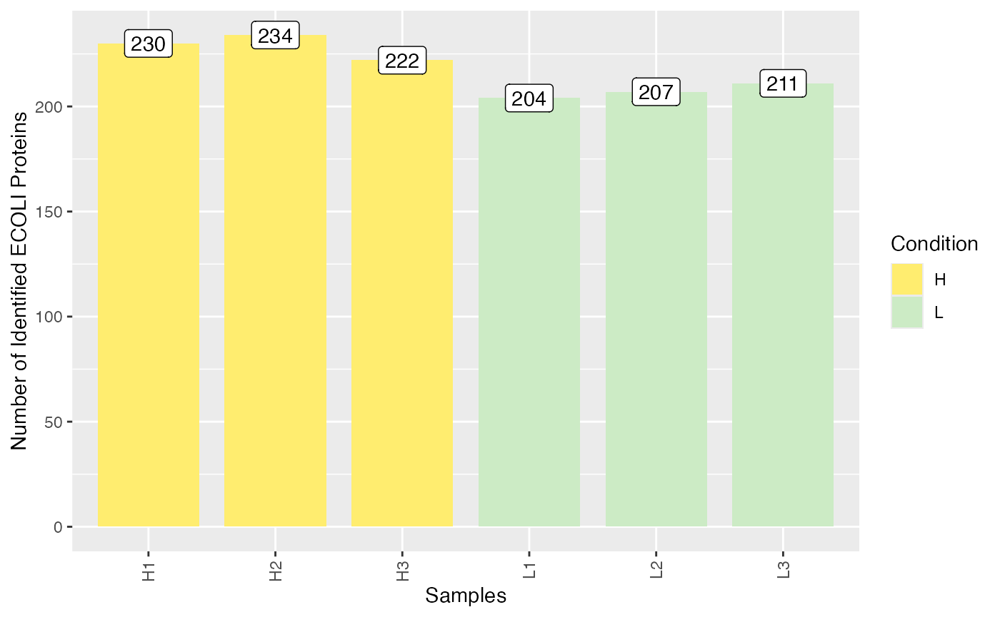
To compare the distributions of spike-in and human proteins in the
different sample groups (here high-low), use the function
plot_histogram_spiked(). Again, “condition = NULL” means
that the condition specified by loading the data is used, but you can
also specify any other column of the meta data.
plot_histogram_spiked(se, condition = NULL)
#> Condition of SummarizedExperiment used!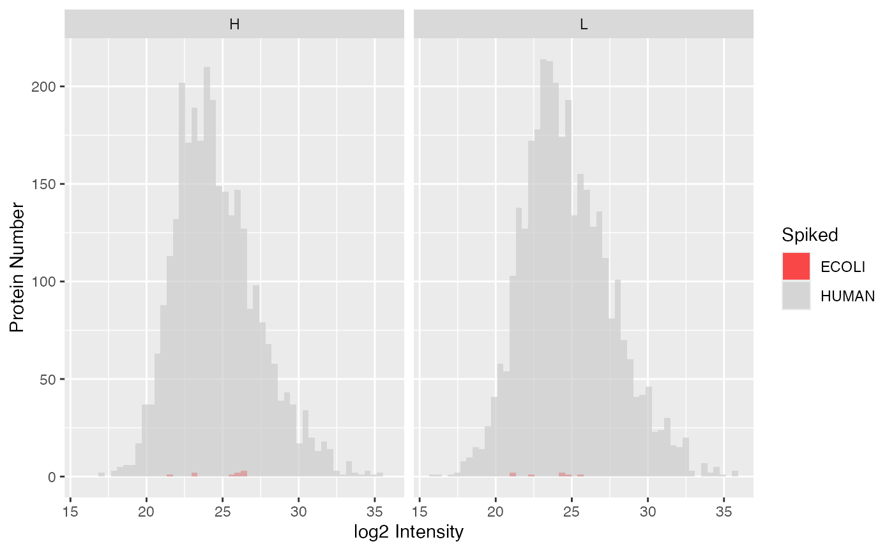
If you want to have a look at the amount of actual measure spike-in,
you can use the plot_profiles_spiked() function. Moreover,
you can analyze whether the intensities of the background proteins, here
HUMAN proteins, are constant across the different spike-in
concentrations.
plot_profiles_spiked(se, xlab = "Concentration")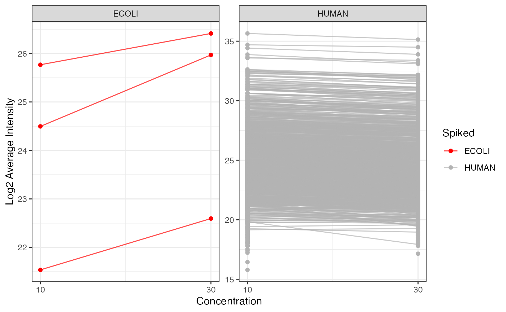
Preprocessing, Normalization, & Imputation
Given that the preprocessing (including filtering of proteins and samples), normalization, and imputation operations remain invariant for spike-in data sets compared to real-world data sets, the same methodologies can be employed across both types. In this context, normalization will only be demonstrated here as the performance of the methods will be evaluated in DE analysis, while detailed descriptions of the other functionalities are available in preceding sections.
se_norm <- normalize_se(se, c("Median", "Mean", "MAD", "LoessF"), combination_pattern = NULL)
#> Median completed.
#> Mean completed.
#> MAD completed.
#> LoessF completed.Differential Expression Analysis
Due to the known spike-in concentrations, the normalization methods can be evaluated based on their ability to detect DE proteins. The DE analysis can be conducted using the same methodology as for real-world data sets. However, other visualization options are available and performance metrics can be calculated for spike-in data sets.
Run DE Analysis
First, you need to specify the comparisons you want to perform in DE analysis. For this, a special function was developed which helps to build the right comparison strings.
comparisons <- specify_comparisons(se_norm, condition = "Condition", sep = NULL, control = NULL)Then you can run DE analysis:
de_res <- run_DE(se = se_norm,
comparisons = comparisons,
ain = NULL,
condition = NULL,
DE_method = "limma",
covariate = NULL,
logFC = TRUE,
logFC_up = 1,
logFC_down = -1,
p_adj = TRUE,
alpha = 0.05,
B = 100,
K = 500)
#> Condition of SummarizedExperiment used!
#> All assays of the SummarizedExperiment will be used.
#> DE Analysis will not be performed on raw data.
#> log2: DE analysis completed.
#> Median: DE analysis completed.
#> Mean: DE analysis completed.
#> MAD: DE analysis completed.
#> LoessF: DE analysis completed.Evaluate DE Results with Performance Metrics
Before being able to visualize the DE results, you need to run
get_spiked_stats_DE() to calculate multiple performance
metrics, such as the number of true positives, number fo false
positives, etc.
stats <- get_spiked_stats_DE(se_norm, de_res)You have different options to visualize the amount of true and false positives for the different normalization techniques and pairwise comparisons. For all these functions, you can specify a subset of normalization methods and comparisons. If you do not specify anything, all normalization methods and comparisons of the “stats” data frame are used.
The plot_TP_FP_spiked_bar() function generates a barplot
showing the number of false positives and true positives for each
normalization method and is facetted by pairwise comparison.
plot_TP_FP_spiked_bar(stats, ain = c("Median", "Mean", "MAD", "LoessF"), comparisons = NULL)
#> All comparisons of stats will be visualized.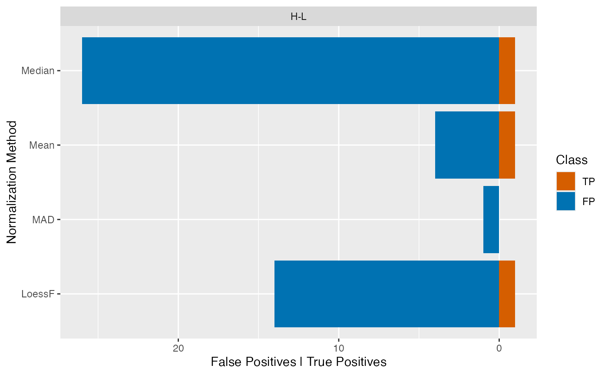
If many pairwise comparisons were performed, the
plot_TP_FP_spiked_box() function can be used to visualize
the distribution of true and false positives for all pairwise
comparisons in a boxplot.
Given that the data set encompasses merely two distinct spike-in concentrations and therefore only one pairwise comparison has been conducted in DE analysis, a barplot would be more appropriate. Nonetheless, for demonstration purposes, a boxplot will be used here.
plot_TP_FP_spiked_box(stats, ain = c("Median", "Mean", "MAD", "LoessF"), comparisons = NULL)
#> All comparisons of stats will be visualized.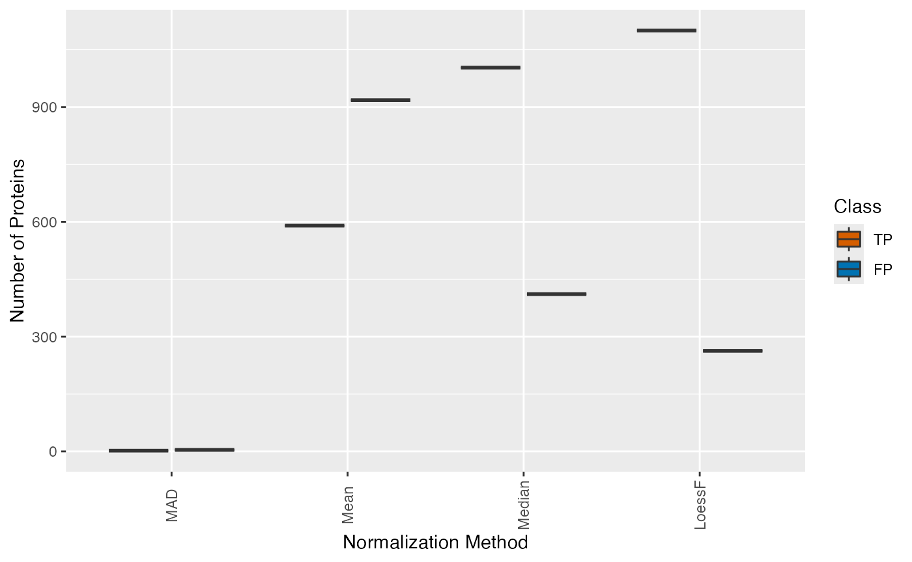
Furthermore, similarly the plot_TP_FP_spiked_scatter()
function can be used to visualize the true and false positives in a
scatter plot. Here, a scatterplot of the median true positives and false
positives is calculated across all comparisons and displayed for each
normalization method with errorbars showing the Q1 and Q3. Here again,
this plot is more suitable for data sets with multiple pairwise
comparisons.
plot_TP_FP_spiked_scatter(stats, ain = NULL, comparisons = NULL)
#> All comparisons of stats will be visualized.
#> All normalization methods of de_res will be visualized.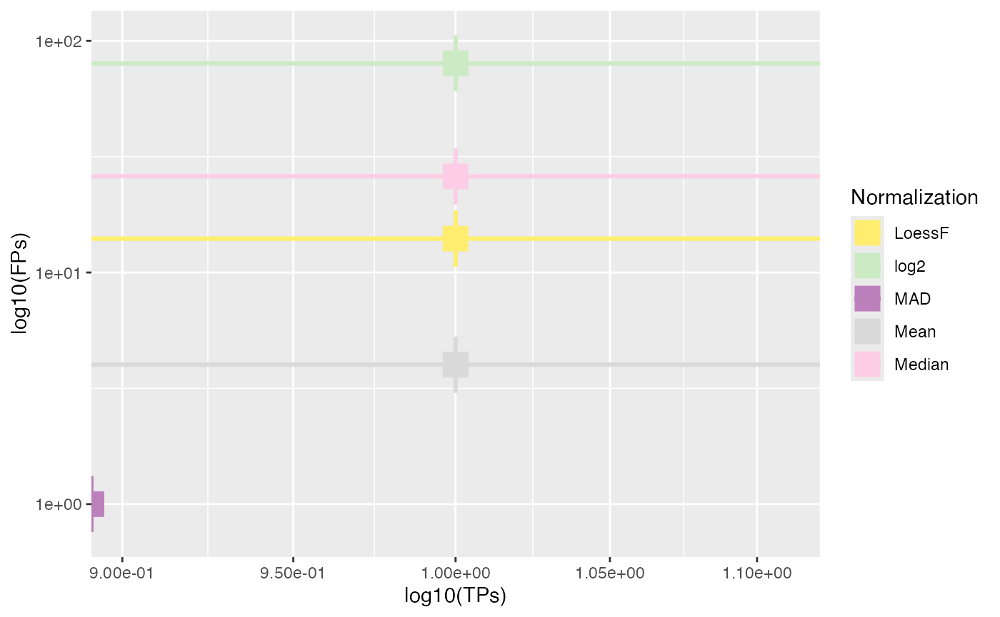
Furthermore, other performance metrics that the number of true
positives and false positives can be visualized using the
plot_stats_spiked_heatmap() function. Here, currently, the
sensitivity, specificity, precision, FPR, F1 score, and accuracy can be
visualized for the different normalization methods and pairwise
comparisons.
plot_stats_spiked_heatmap(stats, ain = c("Median", "Mean", "MAD"), metrics = c("Precision", "F1Score"))
#> All comparisons of stats will be visualized.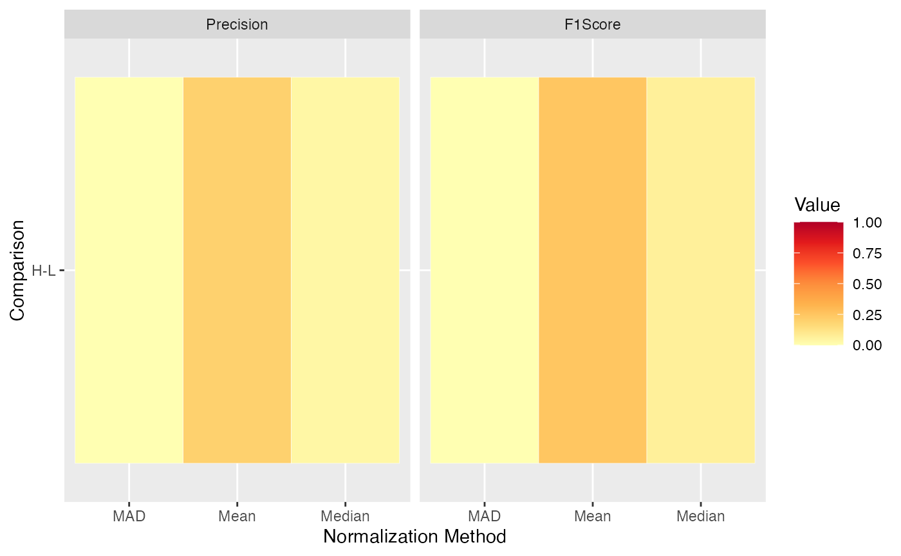
Finally, ROC and AUC values can be calculated and visualized using
the plot_ROC_AUC_spiked() function. This function returns a
plot showing the ROC curves, a bar plot with the AUC values for each
comparison, and a boxplot with the distributions of AUC values across
all comparisons.
plot_ROC_AUC_spiked(se_norm, de_res, ain = c("Median", "Mean", "LoessF"), comparisons = NULL)
#> All comparisons of de_res will be visualized.
#> $ROC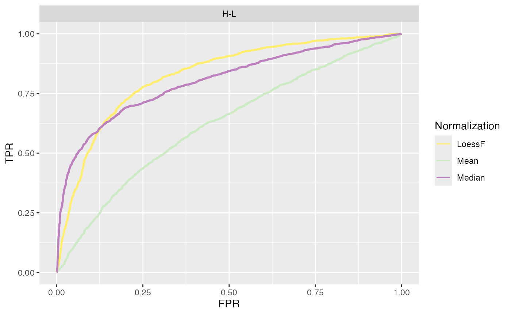
#>
#> $AUC_bars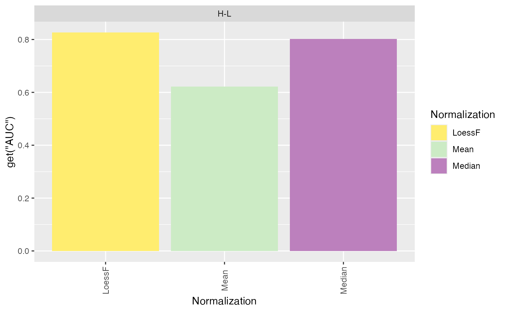
#>
#> $AUC_box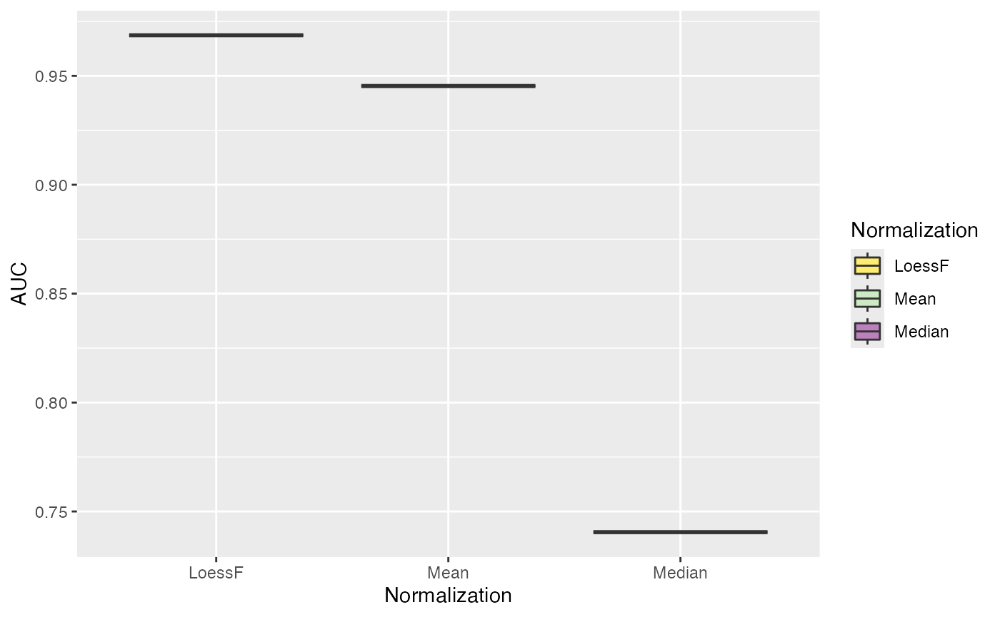
#>
#> $AUC_dt
#> PANEL Comparison group Assay AUC
#> 1 1 H-L 1 LoessF 0.8262511
#> 2 1 H-L 2 Mean 0.6221822
#> 3 1 H-L 3 Median 0.8026922Log Fold Change Distributions
Furthermore, you can visualize the distribution of log fold changes
for the different conditions using the
plot_fold_changes_spiked() function. The fold changes of
the background proteins should be centered around zero, while the
spike-in proteins should be centered around the actual log fold change
calculated based on the spike-in concentrations.
plot_fold_changes_spiked(se_norm, de_res, condition = "Condition", ain = c("Median", "Mean", "MAD"), comparisons = NULL)
#> All comparisons of de_res will be visualized.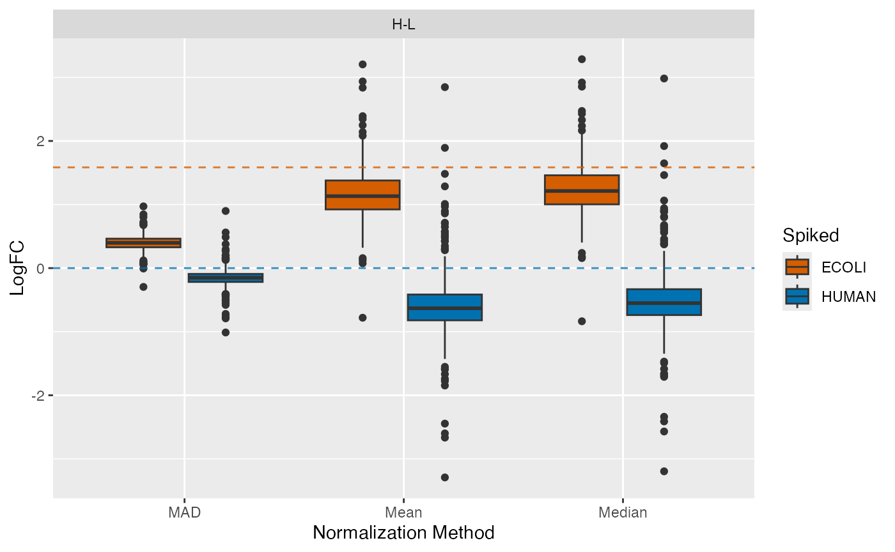
P-Value Distributions
Similarly, the distributions of the p-values can be visualized using
the plot_pvalues_spiked() function.
plot_pvalues_spiked(se_norm, de_res, ain = c("Median", "Mean", "MAD"), comparisons = NULL)
#> All comparisons of de_res will be visualized.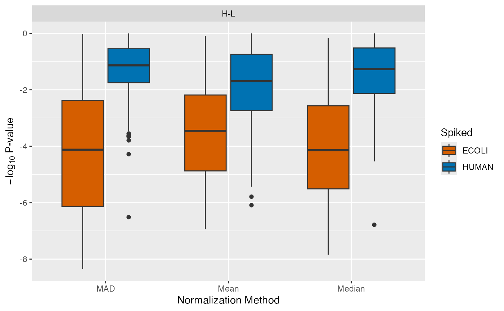
Log Fold Change Thresholds
Due to the high amount of false positives encountered in spike-in
data sets, we provided a function to test for different log fold change
thresholds to try to reduce the amount of false positives. The function
plot_logFC_thresholds_spiked() can be used to visualize the
number of true positives and false positives for different log fold
change thresholds.
plot_logFC_thresholds_spiked(se_norm, de_res, condition = NULL, ain = c("Median", "Mean", "MAD"), nrow = 1, alpha = 0.05)
#> All comparisons of de_res will be visualized.
#> Condition of SummarizedExperiment used!
#> $TP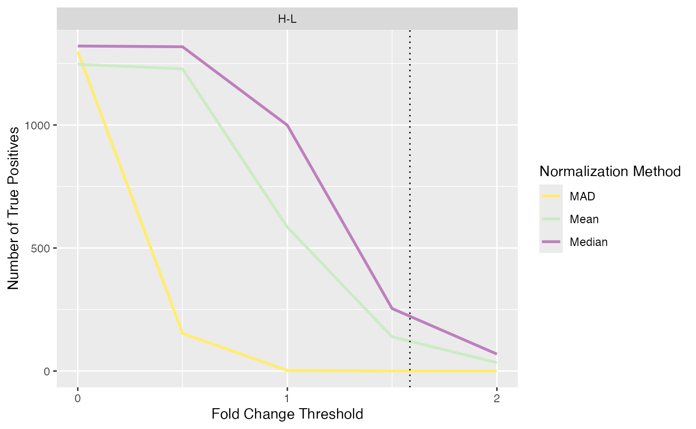
#>
#> $FP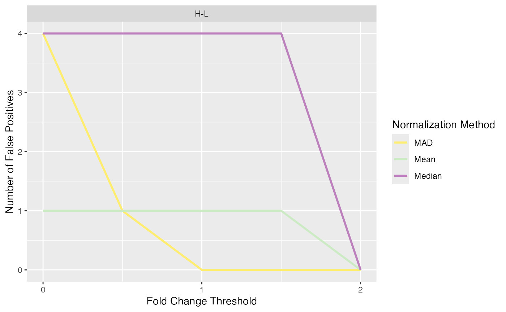
Session Info
utils::sessionInfo()
#> R version 4.4.0 (2024-04-24)
#> Platform: x86_64-apple-darwin20
#> Running under: macOS Ventura 13.6
#>
#> Matrix products: default
#> BLAS: /Library/Frameworks/R.framework/Versions/4.4-x86_64/Resources/lib/libRblas.0.dylib
#> LAPACK: /Library/Frameworks/R.framework/Versions/4.4-x86_64/Resources/lib/libRlapack.dylib; LAPACK version 3.12.0
#>
#> locale:
#> [1] en_US.UTF-8/en_US.UTF-8/en_US.UTF-8/C/en_US.UTF-8/en_US.UTF-8
#>
#> time zone: Europe/Berlin
#> tzcode source: internal
#>
#> attached base packages:
#> [1] stats graphics grDevices datasets utils methods base
#>
#> other attached packages:
#> [1] PRONE_0.1.30
#>
#> loaded via a namespace (and not attached):
#> [1] rlang_1.1.3 magrittr_2.0.3
#> [3] clue_0.3-65 matrixStats_1.3.0
#> [5] compiler_4.4.0 systemfonts_1.0.6
#> [7] vctrs_0.6.5 ProtGenerics_1.35.4
#> [9] pkgconfig_2.0.3 crayon_1.5.2
#> [11] fastmap_1.1.1 XVector_0.43.1
#> [13] labeling_0.4.3 utf8_1.2.4
#> [15] rmarkdown_2.26 UCSC.utils_0.99.7
#> [17] preprocessCore_1.65.0 ragg_1.3.0
#> [19] purrr_1.0.2 xfun_0.43
#> [21] MultiAssayExperiment_1.29.1 zlibbioc_1.49.3
#> [23] cachem_1.0.8 GenomeInfoDb_1.39.14
#> [25] jsonlite_1.8.8 highr_0.10
#> [27] DelayedArray_0.29.9 BiocParallel_1.37.1
#> [29] parallel_4.4.0 cluster_2.1.6
#> [31] R6_2.5.1 RColorBrewer_1.1-3
#> [33] bslib_0.7.0 limma_3.59.10
#> [35] GenomicRanges_1.55.4 jquerylib_0.1.4
#> [37] iterators_1.0.14 Rcpp_1.0.12
#> [39] SummarizedExperiment_1.33.3 knitr_1.46
#> [41] IRanges_2.37.1 splines_4.4.0
#> [43] Matrix_1.7-0 igraph_2.0.3
#> [45] tidyselect_1.2.1 rstudioapi_0.16.0
#> [47] abind_1.4-5 yaml_2.3.8
#> [49] ggtext_0.1.2 doParallel_1.0.17
#> [51] codetools_0.2-20 affy_1.81.0
#> [53] lattice_0.22-6 tibble_3.2.1
#> [55] plyr_1.8.9 withr_3.0.0
#> [57] Biobase_2.63.1 evaluate_0.23
#> [59] desc_1.4.3 xml2_1.3.6
#> [61] pillar_1.9.0 affyio_1.73.0
#> [63] BiocManager_1.30.22 MatrixGenerics_1.15.1
#> [65] renv_1.0.7 foreach_1.5.2
#> [67] stats4_4.4.0 MSnbase_2.29.4
#> [69] MALDIquant_1.22.2 ncdf4_1.22
#> [71] generics_0.1.3 S4Vectors_0.41.7
#> [73] ggplot2_3.5.1 munsell_0.5.1
#> [75] scales_1.3.0 glue_1.7.0
#> [77] lazyeval_0.2.2 tools_4.4.0
#> [79] data.table_1.15.4 mzID_1.41.0
#> [81] QFeatures_1.13.7 vsn_3.71.1
#> [83] mzR_2.37.3 fs_1.6.4
#> [85] XML_3.99-0.16.1 grid_4.4.0
#> [87] impute_1.77.0 tidyr_1.3.1
#> [89] MsCoreUtils_1.15.7 colorspace_2.1-0
#> [91] GenomeInfoDbData_1.2.12 PSMatch_1.7.2
#> [93] cli_3.6.2 textshaping_0.3.7
#> [95] plotROC_2.3.1 fansi_1.0.6
#> [97] S4Arrays_1.3.7 dplyr_1.1.4
#> [99] AnnotationFilter_1.27.0 pcaMethods_1.95.0
#> [101] gtable_0.3.5 sass_0.4.9
#> [103] digest_0.6.35 BiocGenerics_0.49.1
#> [105] SparseArray_1.3.5 farver_2.1.1
#> [107] htmlwidgets_1.6.4 memoise_2.0.1
#> [109] htmltools_0.5.8.1 pkgdown_2.0.9
#> [111] lifecycle_1.0.4 httr_1.4.7
#> [113] NormalyzerDE_1.21.0 statmod_1.5.0
#> [115] gridtext_0.1.5 MASS_7.3-60.2